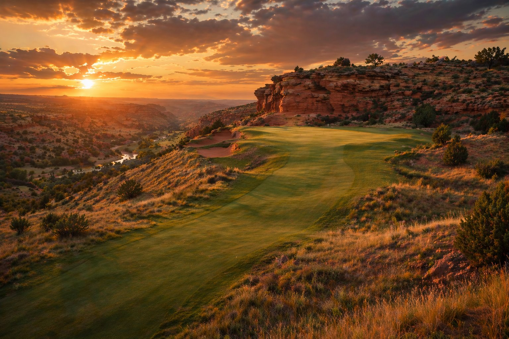
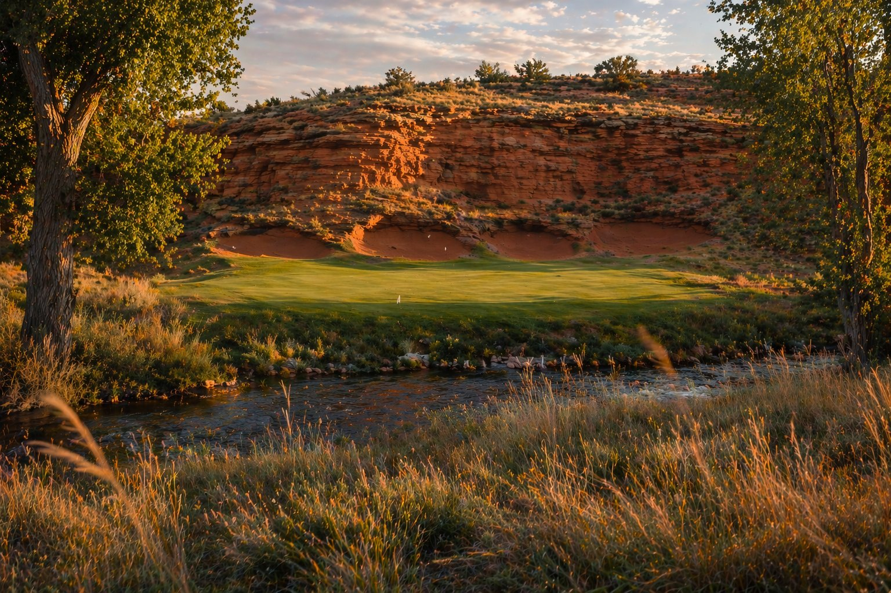

Canadian Breaks Golf Club

The Land
The site sits on the south bank of the Canadian River, approximately 3 miles west of the town of Canadian in Hemphill County. The terrain here drops from the High Plains caprock at roughly 2,500 feet down into the river breaks at around 2,200 feet — delivering nearly 300 feet of usable elevation change across rolling draws, cottonwood-lined creek beds, and red sandstone bluffs. This is as close to Augusta's dramatic terrain as you'll find in Texas.
Red Deer Creek, a major tributary of the Canadian, cuts through the southern portion of the property. It becomes our Rae's Creek — a spring-fed waterway that crosses multiple holes and anchors the course's "Amen Corner" equivalent. Unlike Augusta's manicured nursery setting, this course is framed by native cottonwood corridors, mesquite thickets, and red sandstone outcrops that replace the azaleas and Georgia pines.
Design Philosophy
Augusta National's genius isn't its beauty — it's its strategy. Every hole offers multiple routes, rewards precise angles, and punishes indecision. We translate that DNA to West Texas: wide corridors that reward one specific line, greens that demand approach from the correct side of the fairway, and natural penalties (creek draws, mesquite thickets, red dirt arroyos) that function as water hazards without requiring a drop of irrigation.
The routing follows Augusta's flow: the front nine climbs through the breaks with a mix of reachable par 5s and demanding par 4s. The back nine descends into the river bottom for three holes — our Amen Corner — then climbs back up to a dramatic hilltop finish. Every hole is named for native Panhandle plants, echoing Augusta's nursery tradition.
| Hole | Name | Yards | Par | Design Inspiration |
|---|---|---|---|---|
| 1 | Cottonwood | 445 | 4 | Uphill opener, dogleg right |
| 2 | Buffalo Grass | 570 | 5 | Downhill reachable par 5, arroyo left |
| 3 | Prickly Pear | 355 | 4 | Short par 4, precision over power |
| 4 | Yucca | 235 | 3 | Long par 3 into prevailing wind |
| 5 | Mesquite | 495 | 4 | Uphill dogleg, deep fairway bunkers |
| 6 | Sage | 180 | 3 | Elevated tee, tiered green |
| 7 | Sideoats Grama | 450 | 4 | Tight corridor, three bunker fronts |
| 8 | Red Cedar | 565 | 5 | Risk/reward with creek crossing at 280 |
| 9 | Indian Blanket | 460 | 4 | Uphill finish to ridge-top green |
| Out | 3,755 | 36 | ||
| 10 | Sandstone | 490 | 4 | Steep downhill dogleg into the breaks |
| 11 | Bluestem | 510 | 4 | Red Deer Creek guards green left |
| 12 | Plum Thicket | 155 | 3 | Creek crossing par 3, swirling canyon wind |
| 13 | Hackberry | 545 | 5 | Sweeping dogleg left along the creek bed |
| 14 | Switchgrass | 440 | 4 | Blind approach over a rise |
| 15 | Wild Plum | 540 | 5 | Reachable par 5, playa lake fronts green |
| 16 | Cactus Flower | 170 | 3 | Amphitheater green cut into bluff |
| 17 | Ironwood | 440 | 4 | Narrow approach through mesquite chute |
| 18 | Lone Star | 435 | 4 | Uphill dogleg right to ridgeline green |
| In | 3,725 | 36 | ||
| Total | 7,480 | 72 |

The longest par 4 on the course mirrors Augusta's 11th in concept. The drive plays from an elevated tee down into the Red Deer Creek valley. The creek bends around the left side of the green — hit it left and you're in the water. The bailout right leaves a nearly impossible up-and-down from a collection area that feeds away from the pin. Wind funnels through the creek draw and makes club selection for the approach a genuine puzzle. Par is a great score.
Our version of the 12th at Augusta. Red Deer Creek runs directly in front of a shallow, wide green set into the creek bank. The green is only 10 yards deep but 35 yards wide, with sand-faced bunkers cut into the red sandstone bluff behind. The key: the hole sits in the bottom of the river breaks, where wind swirls unpredictably off the canyon walls above. Club selection can vary two full clubs depending on the gust. The most beautiful — and most treacherous — hole on the course.
A sweeping dogleg left that follows the creek bed through a corridor of native hackberry trees. The drive that challenges the corner — carrying the mesquite thicket at the elbow — leaves a realistic chance at reaching in two. But the creek runs the entire left side and crosses in front of the green. Miss left and you're reloading. The conservative play right leaves a layup to a wedge distance, but the green's back-right pin position is only accessible from the left angle. Strategy over brute force.

The course climbs back to the caprock for its finish. The 18th plays uphill through a natural amphitheater — red sandstone walls frame both sides of the fairway, and the green sits on the highest point of the property with panoramic views of the Canadian River valley. Two bunkers guard the left elbow, and the green slopes hard front-to-back. The setting sun hits the red rock walls behind the green in late afternoon. This is the shot you'll remember.
Turf & Water Strategy
Fairways and tees: TifTuf bermudagrass, irrigated from Red Deer Creek water rights and a drilled well supplementing from the Ogallala Aquifer. Greens: Champion ultradwarf bermuda, overseeded with Poa trivialis in winter for year-round playability. Rough: maintained at first-cut width of 8 yards, then transitions to native buffalo grass. Everything beyond the maintained corridor is native vegetation — no irrigation, no mowing. The mesquite, prickly pear, and tallgrass prairie serve as the penalty areas. Ball goes in, ball stays in.
Native Penalty Areas
Instead of stakes and hazard lines, the course uses natural transitions. Maintained turf ends, and within 3 feet you're in knee-high native grass, mesquite, or prickly pear. Under the Rules of Golf these are marked as penalty areas (red stakes), but the visual penalty is self-evident. The psychological effect mirrors water — once your ball crosses that turf edge, it's gone. The course uses approximately 60% less water than a traditional design because nearly 300 of the 500 acres are unmaintained native landscape.